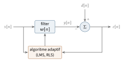
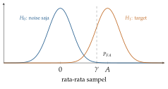
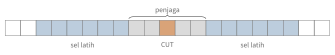
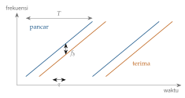

Bab 18
Menangkap Sinyal: Estimasi, Filter, dan Radar
Pemrosesan sinyal masuk ke perjalanan saya lewat dua mata kuliah. Kuliah optimum and adaptive signal processing systems, dengan latihan kelompok berisi enam tugas, membahas variabel dan proses acak, teori estimasi klasik dan Bayesian, filter optimal, dan filter adaptif. Pada musim dingin 2025/26, latihan radar system engineering mengajak kami membangun radar di dalam notebook Python: persamaan radar dalam skala desibel, distribusi noise, deteksi, korelasi dan matched filter, FFT, CFAR, radar FMCW, beamforming digital, sampai sebuah simulator radar sederhana.
Pemrosesan sinyal sudah “belajar dari data” jauh sebelum istilah machine learning populer. Filter adaptif yang meredam gema di telepon memperbarui bobotnya dengan gradien stokastik, persis seperti jaringan saraf. Banyak konsep di bab ini, dari batas Cramér–Rao sampai Kalman filter, sudah kita temui dari sisi machine learning. Di sini kita melihatnya dari sisi insinyur sinyal, yang selalu bertanya tiga hal: seperti apa model sinyalnya, seperti apa noise-nya, dan seberapa baik hasil terbaik yang mungkin dicapai.
Sinyal acak
Sinyal yang menarik hampir selalu bercampur noise, sehingga kita memperlakukannya sebagai proses acak. Kuliah dimulai dari dasar: variabel acak dengan fungsi distribusi kumulatif dan kerapatannya, vektor acak dengan kovarians, lalu proses acak sebagai deret variabel acak yang diindeks waktu. Sebuah proses disebut stasioner dalam arti luas kalau rata-ratanya tetap dan fungsi autokorelasinya, \[r_x[k]=\mathbb{E}\big[x[n]\,x[n+k]\big],\] hanya bergantung pada jarak waktu \(k\), bukan pada waktu absolut. Transformasi Fourier dari autokorelasi adalah power spectral density, yang menyatakan bagaimana daya sinyal tersebar di seluruh frekuensi. Hubungan ini, teorema Wiener–Khinchin, menghubungkan dua cara melihat sinyal yang sama: di waktu lewat korelasi, di frekuensi lewat spektrum. Noise putih punya autokorelasi yang hanya tidak nol di \(k=0\), sehingga spektrumnya datar, seperti cahaya putih yang memuat semua warna.
Dalam praktik, spektrum diperkirakan dari data terbatas dengan periodogram, kuadrat magnitudo FFT dari potongan sinyal. Latihan radar memperlihatkan dua pelajaran praktisnya. Mengalikan sinyal dengan sebuah jendela sebelum FFT, misalnya jendela Hann, menekan kebocoran spektral yang membuat sinusoid tunggal tampak menyebar ke frekuensi tetangga. Menambahkan nol di ujung sinyal (zero padding) membuat spektrum tampak lebih halus karena titik-titiknya lebih rapat, tetapi tidak menambah resolusi yang sebenarnya, karena resolusi frekuensi ditentukan oleh lamanya pengamatan.
Estimasi klasik
Kuliah teori estimasi dimulai dengan contoh paling sederhana: menaksir level tegangan tetap \(A\) dari pengukuran berisik, \(x[n]=A+w[n]\) untuk \(n=0,\dots,N-1\), dengan \(w[n]\) noise putih Gauss bervarians \(\sigma^2\). Log-likelihoodnya \[\ln p(\boldsymbol{x};A)=-\frac N2\ln(2\pi\sigma^2)-\frac1{2\sigma^2}\sum_{n=0}^{N-1}\big(x[n]-A\big)^2.\] Turunan pertama terhadap \(A\) adalah \(\frac1{\sigma^2}\sum_n(x[n]-A)=\frac N{\sigma^2}(\bar x-A)\), yang nol pada \(\hat A=\bar x\), rata-rata sampel. Turunan kedua adalah \(-N/\sigma^2\), tidak bergantung pada data, sehingga Fisher information-nya \(I(A)=N/\sigma^2\) dan batas Cramér–Rao-nya \(\sigma^2/N\) (Bab 15). Rata-rata sampel tak bias dan variansnya tepat \(\sigma^2/N\), jadi ia mencapai batas itu. Dalam bahasa Kay (1993), estimator ini efisien dan sekaligus minimum variance unbiased. Ada satu tanda khas di sini: turunan log-likelihood bisa ditulis sebagai \(I(A)(\hat A-A)\). Kay menunjukkan bahwa estimator efisien ada tepat ketika bentuk ini bisa dicapai.
Untuk model yang linear dalam parameter, \(\boldsymbol{x}=\boldsymbol H\boldsymbol\theta+\boldsymbol w\) dengan \(\boldsymbol w\sim\mathcal{N}(\boldsymbol0,\sigma^2\boldsymbol I)\), penurunan yang sama memberi estimator \[\hat{\boldsymbol\theta}=(\boldsymbol H^\top\boldsymbol H)^{-1}\boldsymbol H^\top\boldsymbol{x},\] dengan kovarians \(\sigma^2(\boldsymbol H^\top\boldsymbol H)^{-1}\) yang juga mencapai batas Cramér–Rao. Estimator yang sama muncul dari kuadrat terkecil biasa: meminimalkan \(\|\boldsymbol{x}-\boldsymbol H\boldsymbol\theta\|^2\), menurunkannya, dan menyamakannya dengan nol memberi persamaan normal \(\boldsymbol H^\top\boldsymbol H\boldsymbol\theta=\boldsymbol H^\top\boldsymbol{x}\). Bedanya, kuadrat terkecil tidak memerlukan asumsi statistik apa pun. Kalau noise-nya tidak Gauss tetapi kita hanya mau estimator linear, best linear unbiased estimator (BLUE) memberi varians terkecil di antara semua estimator linear tak bias, dan untuk noise berkovarians \(\boldsymbol C\) bentuknya menjadi \((\boldsymbol H^\top\boldsymbol C^{-1}\boldsymbol H)^{-1}\boldsymbol H^\top\boldsymbol C^{-1}\boldsymbol{x}\): pengukuran yang berisik diberi bobot kecil.
Contoh dari kuliah yang menyenangkan adalah menaksir garis lurus. Untuk \(x[n]=a+bn+w[n]\), matriks \(\boldsymbol H\) punya kolom berisi satu dan kolom berisi \(n\). Persamaan normal memberi rumus regresi linear yang dikenal di sekolah, dan batas Cramér–Rao untuk kemiringan \(b\) turun seperti \(1/N^3\): mengamati lebih lama jauh lebih membantu untuk kemiringan daripada untuk titik potong, karena ujung-ujung garis yang jauh “mengunci” kemiringannya.
Estimasi Bayesian
Kalau kita punya pengetahuan awal tentang parameter, misalnya bahwa sebuah tegangan hampir pasti di sekitar lima volt, kita memperlakukan parameter sebagai variabel acak dengan prior. Estimator yang meminimalkan galat kuadrat rata-rata Bayesian, \(\mathbb{E}[(A-\hat A)^2]\) dengan ekspektasi atas data dan parameter, ternyata adalah rata-rata posterior \(\mathbb{E}[A\mid\boldsymbol{x}]\), dengan alasan yang sama seperti rata-rata bersyarat di Bab 1. Estimator MAP mengambil puncak posterior.
Untuk level DC dengan prior \(A\sim\mathcal{N}(\mu_A,\sigma_A^2)\), posteriornya Gauss dengan rata-rata \[\hat A_{\mathrm{MMSE}}=\frac{N\sigma_A^2}{N\sigma_A^2+\sigma^2}\,\bar x+\frac{\sigma^2}{N\sigma_A^2+\sigma^2}\,\mu_A,\] rata-rata berbobot antara rata-rata sampel dan rata-rata prior. Misalkan prior kita \(\mu_A=5\) V dengan \(\sigma_A=0{,}5\) V, noise pengukuran \(\sigma=2\) V, dan kita punya \(N=4\) pengukuran dengan rata-rata \(\bar x=6\) V. Bobot data adalah \(4\cdot0{,}25/(4\cdot0{,}25+4)=0{,}2\), sehingga \(\hat A=0{,}2\cdot6+0{,}8\cdot5=5{,}2\) V. Data yang sedikit dan berisik hanya menggeser prior sedikit. Dengan \(N=100\), bobot data naik menjadi sekitar \(0{,}86\), dan data mulai berkuasa.
Untuk model linear Gauss umum, MMSE, MAP, dan estimator linear MMSE (LMMSE) semuanya sama. Ketika distribusinya tidak Gauss, LMMSE tetap bisa dihitung hanya dari rata-rata dan kovarians, dan ia adalah estimator linear terbaik. Kalman filter (Bab 14 dan Bab 19) adalah LMMSE yang diterapkan berulang dalam waktu.
Filter optimal
Misalkan kita ingin mendapatkan sinyal \(d[n]\) dari pengamatan \(x[n]\), dengan filter FIR berbobot \(\boldsymbol w\) yang bekerja pada \(M\) sampel terakhir, \(y[n]=\boldsymbol w^\top\boldsymbol{x}[n]\) dengan \(\boldsymbol{x}[n]=(x[n],x[n-1],\dots,x[n-M+1])^\top\). Filter Wiener memilih bobot yang meminimalkan \(J(\boldsymbol w)=\mathbb{E}\big[(d[n]-\boldsymbol w^\top\boldsymbol{x}[n])^2\big]\). Menguraikan kuadratnya, \[J(\boldsymbol w)=\sigma_d^2-2\boldsymbol w^\top\boldsymbol p+\boldsymbol w^\top\boldsymbol R\boldsymbol w,\] dengan \(\boldsymbol R=\mathbb{E}[\boldsymbol{x}\boldsymbol{x}^\top]\) matriks autokorelasi input dan \(\boldsymbol p=\mathbb{E}[\boldsymbol{x}\,d]\) korelasi silang antara input dan sinyal yang diinginkan. Fungsi ini kuadratik dalam \(\boldsymbol w\), sebuah mangkuk seperti di Bab 4. Gradiennya \(-2\boldsymbol p+2\boldsymbol R\boldsymbol w\), dan menyamakannya dengan nol memberi persamaan Wiener–Hopf, \[\boldsymbol R\,\boldsymbol w_{\mathrm{opt}}=\boldsymbol p,\qquad J_{\min}=\sigma_d^2-\boldsymbol p^\top\boldsymbol R^{-1}\boldsymbol p.\] Hasil ini punya tafsiran geometris, orthogonality principle: pada bobot optimal, galat \(e[n]=d[n]-y[n]\) tidak berkorelasi dengan setiap sampel input, \(\mathbb{E}[e[n]\boldsymbol{x}[n]]=\boldsymbol0\). Tidak ada lagi informasi linear dalam data yang bisa dipakai untuk mengurangi galat, sama seperti residual kuadrat terkecil yang tegak lurus terhadap ruang kolom \(\boldsymbol H\).

Kuliah membahas beberapa susunan yang memakai struktur ini (Gambar 18.1). Pada identifikasi sistem, \(x\) diumpankan ke sistem yang tidak diketahui dan ke filter sekaligus, dan \(d\) adalah keluaran sistem, sehingga bobot optimal meniru respons sistem itu. Pada prediksi, \(d[n]=x[n]\) dan filter hanya melihat sampel-sampel sebelumnya, sehingga ia belajar meramal sinyal satu langkah ke depan. Pada peredam bising, \(d\) berisi sinyal plus bising, \(x\) adalah rekaman bising saja dari mikrofon lain, dan galatnya menjadi sinyal yang sudah dibersihkan. Pada ekualisasi kanal, filter belajar membalik distorsi yang dibuat kanal komunikasi.
Contoh terkecil memperlihatkan isi persamaannya. Untuk filter satu tap, \(\boldsymbol R\) dan \(\boldsymbol p\) hanya bilangan, sehingga \(w_{\mathrm{opt}}=r_{xd}/r_{xx}\). Kalau \(d=0{,}8\,x+v\) dengan \(v\) noise yang tidak berkorelasi dengan \(x\) dan \(\mathbb{E}[x^2]=1\), maka \(r_{xd}=0{,}8\) dan \(w_{\mathrm{opt}}=0{,}8\): filter menemukan penguatan sistem, dan noise \(v\) tertinggal di galat karena memang tidak bisa diprediksi dari \(x\).
Filter Wiener membutuhkan \(\boldsymbol R\) dan \(\boldsymbol p\), yang dalam praktik harus diperkirakan dari data. Menggantinya dengan rata-rata sampel memberi filter kuadrat terkecil, optimal untuk data yang ada, bukan untuk ekspektasinya (Manolakis, Ingle, dan Kogon 2005).
Filter adaptif
Ketika statistik sinyal berubah dari waktu ke waktu, misalnya gema di ruang yang orangnya berpindah tempat, filter harus terus menyesuaikan diri. Kuliah menurunkan algoritme adaptif dalam dua langkah. Langkah pertama adalah steepest descent pada \(J(\boldsymbol w)\): \[\boldsymbol w[n+1]=\boldsymbol w[n]+\mu\big(\boldsymbol p-\boldsymbol R\boldsymbol w[n]\big),\] dengan faktor dua diserap ke dalam \(\mu\). Algoritme ini konvergen ke solusi Wiener kalau \(0<\mu<2/\lambda_{\max}\), dengan \(\lambda_{\max}\) nilai eigen terbesar \(\boldsymbol R\). Setiap mode, yaitu setiap arah vektor eigen, menyusut dengan faktor \((1-\mu\lambda_i)\) per langkah, sehingga mode dengan nilai eigen terkecil adalah yang paling lambat. Rasio \(\lambda_{\max}/\lambda_{\min}\), yang di kuliah disebut sebaran nilai eigen, memainkan peran yang persis sama dengan condition number di Bab 4. Sinyal input yang berwarna, misalnya suara dengan energi terkumpul di frekuensi rendah, punya sebaran nilai eigen besar dan membuat adaptasi lambat.
Langkah kedua mengganti ekspektasi yang tidak diketahui dengan nilai sesaat: \(\boldsymbol R\approx\boldsymbol{x}[n]\boldsymbol{x}[n]^\top\) dan \(\boldsymbol p\approx\boldsymbol{x}[n]d[n]\). Hasilnya adalah algoritme LMS, \[\boldsymbol w[n+1]=\boldsymbol w[n]+\mu\,e[n]\,\boldsymbol{x}[n],\qquad e[n]=d[n]-\boldsymbol w[n]^\top\boldsymbol{x}[n].\] Ini SGD dengan mini-batch berukuran satu, dirumuskan Widrow dan Hoff sekitar 1960. Biayanya hanya sekitar \(2M\) perkalian per sampel. Harga yang dibayar adalah noise gradien: bahkan setelah konvergen, bobot terus bergoyang di sekitar solusi Wiener, sehingga galat rata-ratanya sedikit di atas \(J_{\min}\). Kelebihan galat ini disebut misadjustment, dan kira-kira sebanding dengan \(\mu\) dikali jumlah daya input. Di sini muncul trade-off yang sama dengan laju belajar SGD: langkah besar cepat menyesuaikan diri tetapi bergoyang, langkah kecil tenang tetapi lambat. NLMS membagi langkah dengan daya input sesaat, \(\mu/(\epsilon+\|\boldsymbol{x}[n]\|^2)\), sehingga perilakunya tidak bergantung pada keras-lemahnya sinyal.
Algoritme RLS memecahkan masalah sebaran nilai eigen dengan cara lain. Ia meminimalkan jumlah kuadrat galat semua sampel masa lalu yang dibobot eksponensial, \(\sum_{i\le n}\lambda^{n-i}e[i]^2\), dan memperbarui invers matriks autokorelasinya secara rekursif dengan rumus Woodbury, sehingga setiap langkah mirip langkah Newton. Faktor lupa \(\lambda\) sedikit di bawah satu menentukan panjang ingatan efektif, kira-kira \(1/(1-\lambda)\) sampel: \(\lambda=0{,}99\) berarti filter terutama mengingat seratus sampel terakhir. RLS konvergen jauh lebih cepat dan tidak terpengaruh warna input, dengan biaya sekitar \(M^2\) operasi per sampel.
Bayangkan headphone peredam bising. Mikrofon luar menangkap suara mesin pesawat, dan filter adaptif belajar memprediksi seberapa banyak suara itu bocor ke telinga. Speaker lalu memutar prediksi dengan tanda terbalik. Setiap kali pesawat berbelok atau penumpang menggeser kepala, galat sisa berubah, dan bobot filter ikut bergeser beberapa ribu kali per detik.
Radar dalam desibel
Radar memancarkan gelombang elektromagnetik dan mendengarkan pantulannya. Latihan pertama menurunkan persamaan radar langkah demi langkah. Antena dengan daya pancar \(P_T\) dan penguatan \(G_T\) menghasilkan kerapatan daya \(S_T=P_TG_T/(4\pi R^2)\) di target. Target memantulkan daya sebesar \(S_T\sigma\), dengan \(\sigma\) radar cross section, luas efektif yang “dilihat” radar. Pantulan itu kembali menyebar seperti bola, sehingga kerapatannya di penerima \(S_T\sigma/(4\pi R^2)\), dan antena penerima dengan luas efektif \(A_{\mathrm{eff}}=G_R\lambda^2/(4\pi)\) menangkap sebagian. Mengalikan semuanya memberi \[P_R=\frac{P_TG_TG_R\lambda^2\sigma}{(4\pi)^3R^4}.\] Pangkat empat pada jarak datang dari dua perjalanan, pergi dan pulang, masing-masing melemah sebanding \(R^2\). Akibatnya, untuk melipatgandakan jangkauan, daya pancar harus dinaikkan enam belas kali.
Angka-angka radar membentang belasan orde besaran, sehingga insinyur bekerja dalam desibel, di mana perkalian menjadi penjumlahan. Ambil radar mobil 77 GHz, dengan panjang gelombang \(\lambda=c/f\approx3{,}9\) mm, daya pancar 10 dBm, penguatan antena pancar dan terima masing-masing 20 dBi, mobil di depan dengan RCS sekitar \(10\ \mathrm{m^2}\) (10 dBsm), pada jarak 50 m. Dalam desibel, \[P_R=10+20+20+20\log_{10}0{,}0039+10-30\log_{10}4\pi-40\log_{10}50\approx-89\ \mathrm{dBm},\] dengan suku-suku \(-48{,}2\), \(-33{,}0\), dan \(-68{,}0\) dB untuk panjang gelombang, faktor \(4\pi\), dan jarak. Daya yang kembali sekitar satu pikowatt. Apakah sinyal sekecil itu terdeteksi bergantung pada noise penerima. Noise termal sebanding dengan \(k_BT\) dikali lebar pita, dan penerima nyata menambahkan noise-nya sendiri, yang dinyatakan dengan noise figure. Penerima dengan noise figure 12 dB membuat noise-nya hampir enam belas kali lebih besar dari noise termal ideal.
Mendeteksi di tengah noise
Pertanyaan deteksi adalah uji hipotesis: apakah yang kita lihat hanya noise (\(H_0\)) atau noise ditambah target (\(H_1\))? Latihan memulainya dengan masalah paling sederhana, mendeteksi level DC \(A\) dalam noise Gauss. Kriteria Neyman–Pearson memaksimalkan peluang deteksi \(P_D\) untuk peluang alarm palsu \(P_{FA}\) tertentu, dan untuk masalah ini ujinya adalah membandingkan rata-rata sampel dengan ambang \(\gamma\). Di bawah \(H_0\), rata-rata itu berdistribusi \(\mathcal{N}(0,\sigma^2/N)\), sehingga \[P_{FA}=Q\Big(\frac{\gamma}{\sigma/\sqrt N}\Big),\qquad P_D=Q\Big(\frac{\gamma-A}{\sigma/\sqrt N}\Big),\] dengan \(Q\) peluang ekor kanan distribusi normal standar. Dengan \(\sigma=1\), \(N=16\), dan \(P_{FA}=10^{-3}\), kita butuh \(\gamma/0{,}25=3{,}09\), jadi \(\gamma\approx0{,}77\). Untuk \(A=1\), \(P_D=Q(-0{,}92)\approx0{,}82\). Menggandakan jumlah sampel menaikkan \(P_D\) di atas \(0{,}95\). Gambar 18.2 memperlihatkan trade-off-nya: menggeser ambang ke kanan mengurangi alarm palsu sekaligus mengurangi deteksi.

Radar biasanya bekerja dengan sinyal kompleks, komponen sefase dan kuadratur, dan mendeteksi magnitudonya. Latihan memperlihatkan distribusi yang muncul. Kalau komponen sefase dan kuadratur adalah noise Gauss independen dengan varians \(\sigma^2\), magnitudonya berdistribusi Rayleigh. Kalau ada sinyal konstan ditambah noise, magnitudonya berdistribusi Rice. Untuk Rayleigh, peluang magnitudo melewati ambang \(T\) adalah \(\exp(-T^2/2\sigma^2)\), sehingga ambang untuk \(P_{FA}=10^{-4}\) adalah \(T=\sigma\sqrt{-2\ln10^{-4}}\approx4{,}3\sigma\).
Korelasi dan matched filter
Untuk menemukan pantulan lemah di tengah noise, sinyal yang diterima dikorelasikan dengan sinyal yang dipancarkan. Mengapa korelasi? Misalkan sinyal yang diterima \(\boldsymbol s+\boldsymbol w\) dengan noise putih bervarians \(\sigma^2\), dan kita melewatkannya ke filter linear \(\boldsymbol h\). Rasio sinyal terhadap noise di keluaran adalah \[\mathrm{SNR}=\frac{|\boldsymbol h^\top\boldsymbol s|^2}{\sigma^2\|\boldsymbol h\|^2}\le\frac{\|\boldsymbol s\|^2}{\sigma^2},\] dengan ketaksamaan Cauchy–Schwarz di langkah terakhir, yang menjadi persamaan tepat ketika \(\boldsymbol h\) sebanding dengan \(\boldsymbol s\). Filter terbaik adalah sinyal itu sendiri, dibalik dalam waktu, sehingga filtering menjadi korelasi. Itulah matched filter (Richards 2014). SNR terbaiknya hanya bergantung pada energi sinyal, bukan pada bentuknya.
Bentuk sinyal tetap penting untuk ketajaman puncak. Pulsa persegi panjang punya autokorelasi berbentuk segitiga yang lebar. Latihan membandingkannya dengan kode Barker sepanjang sebelas, \((+,+,+,-,-,-,+,-,-,+,-)\), yang autokorelasinya bernilai 11 di pusat dan tidak lebih dari 1 di tempat lain. Energinya sama dengan pulsa persegi sepanjang sebelas, tetapi puncaknya setajam pulsa sepanjang satu. Teknik ini, pulse compression, memberi jangkauan dari pulsa panjang dan resolusi dari pulsa pendek.
CFAR
Pada sinyal nyata, tingkat noise dan clutter berubah dari satu tempat ke tempat lain, sehingga ambang tetap gagal: di daerah tenang ia terlalu tinggi, di daerah berisik ia memicu banyak alarm palsu. Constant false alarm rate (CFAR) menghitung ambang secara lokal (Gambar 18.3). Setiap sel bergiliran menjadi cell under test. Tingkat noise diperkirakan dari sel-sel latih di kiri dan kanannya, dengan beberapa sel penjaga di antaranya supaya energi target sendiri, yang menyebar ke sel tetangga, tidak ikut terhitung.

Untuk detektor daya, noise berdistribusi eksponensial, dan varian cell-averaging memakai rata-rata \(N\) sel latih \(\hat P\) lalu menyatakan deteksi kalau sel yang diuji melebihi \(\alpha\hat P\). Faktor skala untuk peluang alarm palsu tertentu bisa diturunkan secara tertutup: \(P_{FA}=(1+\alpha/N)^{-N}\), sehingga \[\alpha=N\big(P_{FA}^{-1/N}-1\big).\] Dengan \(N=16\) dan \(P_{FA}=10^{-4}\), \(10^{4/16}\approx1{,}78\) dan \(\alpha\approx12{,}5\), atau sekitar 11 dB di atas noise. Hasil kuncinya adalah bahwa \(\alpha\) tidak bergantung pada tingkat noise yang sebenarnya, sehingga peluang alarm palsu tetap konstan meski noise naik turun. Itulah asal nama CFAR.
Varian lain menangani kasus sulit. CAGO mengambil yang lebih besar dari rata-rata kiri dan kanan, sehingga tidak memicu alarm palsu di tepi clutter. CASO mengambil yang lebih kecil, sehingga tidak tertutupi target lain di dekatnya. Order-statistic CFAR memakai nilai berperingkat tertentu alih-alih rata-rata, dan tetap bekerja ketika beberapa target berdekatan (Rohling 1983). Latihan juga memperlihatkan sisi rekayasa: loop CFAR dalam Python murni lambat sekali, dan kompilasi just-in-time dengan Numba mempercepatnya ratusan kali.
Radar FMCW
Radar mobil memakai gelombang kontinu yang frekuensinya naik secara linear, sebuah chirp (Gambar 18.4). Pantulan dari target pada jarak \(R\) tiba dengan tunda \(\tau=2R/c\), sehingga pada setiap saat frekuensinya sedikit lebih rendah dari sinyal yang sedang dipancarkan, dengan selisih kemiringan dikali tunda. Mencampur keduanya menghasilkan sinyal intermediate frequency dengan frekuensi beat \[f_b=k\tau=\frac{2kR}{c},\qquad k=\frac BT,\] dengan \(B\) lebar pita dan \(T\) durasi chirp. FFT sinyal IF langsung memberi profil jarak. Dua target hanya terpisah kalau beat-nya berbeda lebih dari satu bin FFT, \(1/T\), sehingga resolusi jaraknya \(\Delta R=c/(2B)\), lima belas sentimeter untuk satu gigahertz. Dengan \(B=1\) GHz dan \(T=50\,\mu\)s, target pada sepuluh meter menghasilkan beat sekitar \(1{,}33\) MHz.

Kecepatan diperoleh dari deretan chirp. Target yang bergerak dengan kecepatan radial \(v\) mengubah jaraknya sebesar \(vT\) dari satu chirp ke chirp berikutnya, dan fase sinyal IF bergeser sebesar \(\Delta\phi=4\pi vT/\lambda\). FFT kedua di sepanjang chirp mengubah geseran fase itu menjadi kecepatan, dan hasil kedua FFT bersama-sama membentuk peta jarak dan kecepatan (range–Doppler map). Kecepatan terbesar yang tidak ambigu tercapai ketika \(\Delta\phi=\pi\), yaitu \(v_{\max}=\lambda/(4T)\), dan resolusi kecepatannya \(\lambda/(2N_cT)\) untuk \(N_c\) chirp. Pada 77 GHz dengan \(T=50\,\mu\)s dan 128 chirp, radar ini melihat kecepatan sampai sekitar \(19{,}5\) m/s dengan resolusi sekitar \(0{,}3\) m/s.
Beamforming digital
Dengan beberapa antena penerima yang tersusun lurus berjarak \(d\), gelombang datar dari arah \(\theta\) mencapai antena-antena itu dengan selisih jalan \(d\sin\theta\), sehingga fasenya bergeser \(\Delta\phi=2\pi d\sin\theta/\lambda\) dari satu antena ke antena berikutnya. Dengan \(d=\lambda/2\), geserannya \(\pi\sin\theta\), dan seluruh rentang \(-90^\circ\) sampai \(90^\circ\) terpetakan tanpa ambiguitas. FFT ketiga, kali ini di sepanjang antena, mengubah geseran fase menjadi sudut. Resolusi sudutnya kira-kira \(2/N_A\) radian di arah depan untuk \(N_A\) antena: delapan antena memberi sekitar \(14^\circ\).
Resolusi itu kasar, dan latihan memperkenalkan metode subruang untuk mempertajamnya. Algoritme MUSIC menghitung matriks kovarians sinyal antar antena, memisahkan vektor eigennya menjadi subruang sinyal (nilai eigen besar) dan subruang noise (sisanya), lalu memanfaatkan fakta bahwa vektor arah target harus tegak lurus terhadap subruang noise. Pseudo-spektrumnya, \(1/\|\boldsymbol E_n^{H}\boldsymbol a(\theta)\|^2\), memuncak tajam di arah target, jauh lebih tajam dari FFT. Harganya, kita harus tahu atau menebak jumlah target, dan metode ini peka terhadap kalibrasi antena. Latihan berakhir dengan simulator yang menggabungkan semua langkah ini: chirp dipancarkan ke beberapa target, noise ditambahkan, lalu seluruh rantai FFT, CFAR, dan estimasi sudut dijalankan untuk menemukannya kembali.
Di mana machine learning masuk
Batas antara pemrosesan sinyal dan machine learning semakin kabur. Peta jarak dan kecepatan radar diperlakukan sebagai gambar dan dimasukkan ke jaringan konvolusi untuk mengenali gerakan tangan atau membedakan pejalan kaki dari sepeda. Detektor CFAR klasik bisa diganti detektor yang dipelajari dari data, dengan risiko bahwa jaminan alarm palsunya hilang. Algoritme iteratif, misalnya untuk rekonstruksi sinyal, bisa “dibuka” (unrolled): setiap iterasi menjadi satu lapisan jaringan yang parameternya dipelajari, sehingga struktur algoritme klasik tetap terjaga. Dan di arah sebaliknya, gagasan pemrosesan sinyal, seperti filter, frekuensi, dan wavelet, memberi bahasa untuk memahami apa yang dilakukan jaringan saraf (Bab 13). Fondasinya tetap sama: model, noise, dan batas atas apa yang bisa diestimasi dari data.
Perkembangan riset
Pemrosesan sinyal klasik dan deep learning kini sering digabung dengan cara yang menjaga struktur algoritme lama. Algorithm unrolling (Monga, Li, dan Eldar 2021) mengambil algoritme iteratif yang sudah dikenal, misalnya iterasi untuk pemulihan sinyal jarang atau rekonstruksi citra, lalu “membuka” sejumlah iterasinya menjadi lapisan-lapisan jaringan. Parameter yang semula dipilih tangan, seperti ukuran langkah dan ambang, menjadi bobot yang dipelajari dari data. Jaringan yang dihasilkan jauh lebih kecil dari jaringan generik, lebih mudah ditafsirkan karena setiap lapisan punya arti, dan butuh lebih sedikit data latih.
KalmanNet (Revach dkk. 2021) menerapkan pola yang sama pada Kalman filter. Persamaan prediksi dan koreksi dari Bab 14 tetap dipakai, tetapi Kalman gain tidak dihitung dari matriks kovarians noise yang harus diketahui, melainkan dikeluarkan oleh sebuah jaringan rekuren kecil yang membaca selisih pengukuran dan prediksi. Ketika model keadaan tidak linear atau tidak diketahui persis, KalmanNet dilaporkan mengungguli filter klasik, sambil tetap mempertahankan struktur yang bisa ditafsirkan. Inilah model hibrida dari Bab 32, dalam bahasa pemrosesan sinyal: fisika dan struktur dari model, sisanya dari data.
Catatan sumber.
Bab ini mengikuti kuliah dan latihan Optimum and Adaptive Signal Processing Systems (variabel dan proses acak, estimasi klasik dan Bayesian, filter Wiener dan kuadrat terkecil, steepest descent, LMS, NLMS, RLS) serta latihan Radar System Engineering (persamaan radar dalam desibel, distribusi noise dan deteksi, korelasi dan matched filter, FFT, CFAR, FMCW, beamforming digital dan MUSIC, simulator). Bacaan yang disebut kuliah: Kay (1993) dan Manolakis, Ingle, dan Kogon (2005). Untuk radar, Richards (2014).